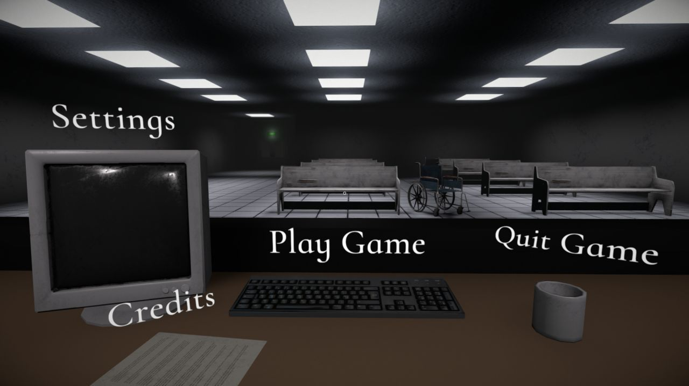

Back to Apps
Unity / Century Games Game Jam · 2026
A Quiet Shift
Enemy AI and animation for a game built during a seven-day jam.
Play Now
Unity WebGL · Microphone for sound detection

My contribution
I implemented shortest-path navigation toward target locations and distance-based detection of sound events. I also made three Unity animations for movement and search behaviors.